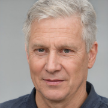
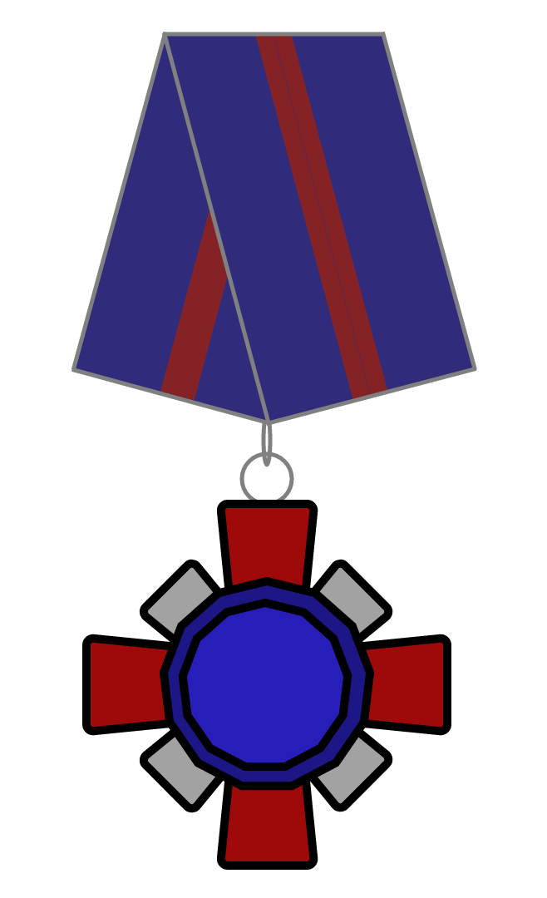

Устинов, Глеб Платонович
Глеб Платонович Устинов - государственный и политический деятель СФ. Второй Президент СФ (с 6 июля 2022 года), ранее занимал должность Министра обороны и безопасности.
Заг
Текст
Заг
Текст
Глеб Платонович Устинов - государственный и политический деятель СФ. Второй Президент СФ (с 6 июля 2022 года), ранее занимал должность Министра обороны и безопасности.
Текст
Текст
| Глеб Платонович Устинов | |
|  | |
| Награды |  |
|---|---|

2-ой Президент СФ 
| |
| с 6 июля 2022 | |
| Глава правительства | Михаил Ананьев |
| Предшественник | Александр Владимиров |
|
Министр обороны и безопасности СФ
| |
| 9 октября 2021 - 6 июля 2022 | |
| Глава правительства | Ярослав Русаков Алина Лукина |
| Президент | Александр Владимиров |
| Предшественник | должность учреждена |
| Преемник | Александр Владимиров |

Сенатор СФ I и III созыва от Сашинграда
| |
| с 6 июля 2022 | |
| Президент | он сам |
| Фракция | Свабода |
| 6 октября 2021 - 21 ноября 2021 | |
| Президент | Александр Владимиров |
| Фракция | Свабода |